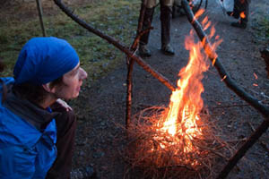

Outdoorvíkend bude akce
- kde lépe poznáš sebe a další účastníky
IS kurzu - kde zažiješ různé typy outdoorových
programů - o tom, jak energii přírody využívat
v zážitkovce - o pobytu v přírodě v drsných podmínkách
- po které budete dlouho spát...
Důležité informace
- akce se koná během prodlouženého víkendu 25.-28.10. 2013
- akce je určena pro 35 účastníků, přednost mají účastníci IS kurzu 2013/2014
- úterý 1.10. 2013, 20:00 - zahájení přihlašování (viz. přihláška)
- pátek 11.10. 2013, 20:00 - konec přihlašování
- pátek 18.10. 2013, 20:00 - termín, kdy musí být účastnický poplatek připsán na účet organizátorů v opačném případě bude místo nabídnuto náhradníkùm
- V době konání Outdoorvíkendu se konají volby do poslanecké sněmovny parlamentu ČR. O tom, jak volit (a současně si užít Outdoorvíkend), více na stránce praktické info